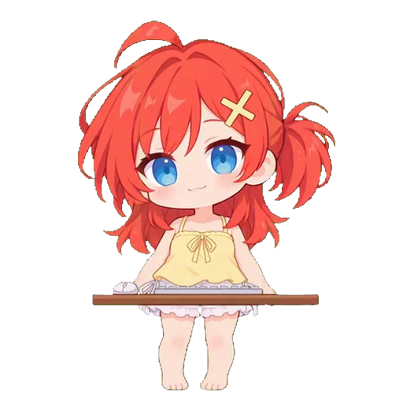
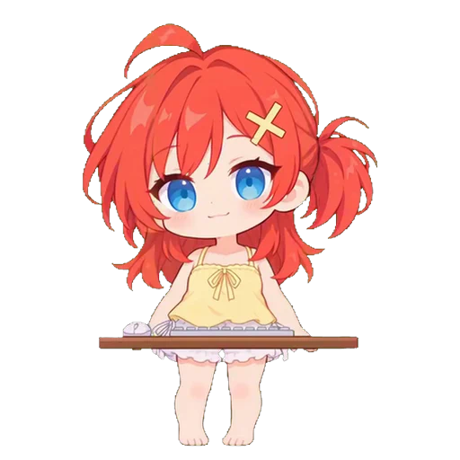

Mira 的思考与对话气泡
思考是一行持续流动的状态；回答是一句停下来的核心大意。两种气泡都轻放在头顶，宽度与 240px 角色画布一致。
设计示意 · 下方文字均为示例，角色来自现有 v5 素材；尚未接入真实模型或原生窗口。
浅色

思考气泡 · 连续横向滚动

对话气泡 · 一句核心概括
深色
无实时思考流 · 明确状态提示
对话气泡 · 静止可扫读
让人知道还在进行
思考泡用两个小圆尾连接头顶。一行文字向左匀速流动，表达工作仍在推进，无需等待或读完。
一句话知道核心意思
对话泡用短尾尖连接角色，文字静止。概括保留“不确定、未验证、需要确认”，不给用户错误的完成印象。